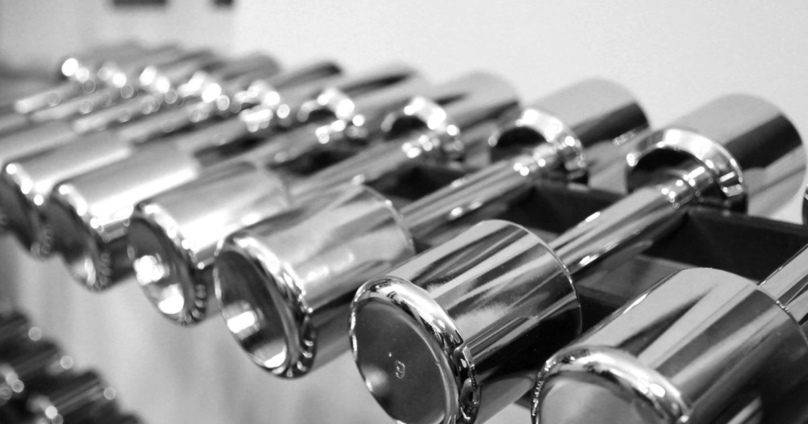

Minimal Gear
One Dumbbell, Full Body: A Complete Workout
If you own exactly one weight, this is the most you can get out of it. The trick is that a single dumbbell is not a light barbell — it is a tool for loading one side at a time.

A single dumbbell looks like a compromised barbell, and used that way it is disappointing — a two-handed press with one moderate dumbbell is a light exercise for most people.
Used as a tool for loading one limb at a time, it is a genuinely capable piece of equipment. The same weight that is trivial in two hands is meaningful in one.
The principle: unilateral, not light
Two mechanisms make a single dumbbell more useful than its weight suggests.
Halving the support doubles the load. A ten-kilo dumbbell held in one hand during a split squat loads that side far more than five kilos in each hand would, because the working leg is already carrying most of your bodyweight and the extra load is asymmetric.
Asymmetry loads the trunk. Holding weight on one side forces the trunk to resist sideways bending throughout, which trains anti-lateral-flexion — one of the four core functions described in core training without sit-ups. You get core work as a by-product rather than as a separate exercise.
So the rule for programming a single dumbbell: use it in one hand, and let the asymmetry do the work.
Choosing the weight
If you are buying one, an adjustable dumbbell is the obvious answer, and the selection criteria are in the adjustable dumbbells buying guide.
If you are buying a fixed weight, the useful test is: pick something you can press overhead in one hand for about eight to ten repetitions. That will be roughly right for rows, presses and carries, and slightly light for legs — which is acceptable, because legs get most of their load from your bodyweight anyway.
For most untrained adults that lands somewhere between 8 and 15 kilograms. Err heavier rather than lighter: light dumbbell exercises are hard to progress, whereas a heavy one can always be used for fewer repetitions.
The session
Warm up for five minutes. Rest ninety seconds between sets. About thirty minutes. Everything is done one side at a time unless stated.
Single-arm overhead press — 3 × 6–10 each side
Standing, pressing from the shoulder. The exercise that most justifies owning a weight, because bodyweight cannot load vertical pressing well.
Goblet or suitcase split squat — 3 × 8–12 each leg
Hold the dumbbell at your chest, or in one hand on the side of the rear leg. The one-handed version adds a substantial trunk demand. Setup in Bulgarian split squats at home.
Single-arm row — 3 × 8–12 each side
Hinged at the hips with the free hand on a chair for support. Drive the elbow back past the ribs.
Single-leg Romanian deadlift — 3 × 8–10 each side
Dumbbell in the hand opposite the standing leg. Hinge at the hip with a flat back. The hinge pattern, loaded.
Floor press or push-up — 3 × 8–15
A single-arm floor press if you want to load it asymmetrically, or ordinary push-ups if your pressing strength already exceeds the dumbbell.
Suitcase carry — 3 × 30–45 seconds each side
Walk holding the weight in one hand, torso vertical, resisting the lean. Covered below.
All five movement patterns, plus loaded carries, from one object.
Carries, the underrated half
Worth its own section because almost nobody does them and they are among the most useful things a single dumbbell enables.
A suitcase carry — walking with weight in one hand while keeping the torso upright — trains grip, the trunk's resistance to sideways bending, and postural endurance simultaneously. It is also completely safe, requires no technique to speak of, and can be done in a hallway.
Do them for time rather than distance if space is short: thirty to forty-five seconds per side, walking back and forth. If your torso is leaning toward the weight, it is too heavy for now.
They are also the one exercise that genuinely transfers to daily life. Carrying shopping in one hand is a suitcase carry whether you trained for it or not.
The same dumbbell that is trivial in two hands is a real load in one. That is the entire method.
Progressing with one weight
The obvious problem: you cannot add weight. The same four levers that apply to bodyweight training apply here.
More repetitions, then harder variations. Once you exceed the top of a rep range, change the exercise rather than continuing to add reps — a split squat becomes a rear-foot-elevated split squat, a floor press becomes a single-arm floor press.
Slow the lowering phase. Three or four seconds. Free and effective.
Pause at the hardest point. Two seconds at the bottom of a split squat removes the stretch reflex entirely.
Get closer to failure. The most important one. Evidence comparing light and heavy loads found comparable hypertrophy when sets were taken close to failure,1 and with a fixed weight, effort is the intensity variable you control.
Add sets. Weekly volume drives adaptation up to a point,2 so going from three sets to four is a legitimate progression.
Combine the dumbbell with bodyweight work rather than treating them as separate systems. The dumbbell handles pressing overhead and loaded hinging; bodyweight handles pushing and pulling — the full picture is in bodyweight exercise progressions.
When to buy a second
Later than you would think, and possibly never.
A second dumbbell lets you load both sides at once, which is mainly useful for heavy two-handed work such as goblet squats and bench pressing. Neither is essential at home, and both are partly covered by bodyweight variations.
What a second weight genuinely improves is efficiency — you halve the number of sets because you train both sides simultaneously. That is a real benefit if session time is your binding constraint.
If you are choosing between a second dumbbell and something else entirely, resistance bands or a pull-up bar usually add more, because they cover the pulling pattern that a dumbbell only partly reaches. The priority order is in the minimalist home gym guide, and the alternative implements are compared in kettlebell vs dumbbell for a small home setup.
Where to go next
For choosing an adjustable model, see the adjustable dumbbells buying guide. For free alternatives to a dumbbell, see DIY home gym equipment.
Frequently asked questions
Can you get a full workout with one dumbbell?
Yes, provided you use it one side at a time. A single dumbbell used unilaterally covers overhead pressing, rows, split squats, single-leg hinges, floor presses and loaded carries — all five movement patterns.
What weight dumbbell should I buy if I only get one?
Something you can press overhead in one hand for about eight to ten repetitions, which for most untrained adults is between 8 and 15 kilograms. Err heavier rather than lighter, since a heavy weight can always be used for fewer repetitions.
Is one dumbbell enough to build muscle?
For upper-body pressing, rowing and single-leg work, yes. Legs are the weakest area, since they are strong relative to any single dumbbell — but they get most of their load from your bodyweight anyway.
How do I progress with only one dumbbell?
Add repetitions until you exceed the range, then move to a harder variation. Slow the lowering phase, pause at the hardest point, take sets closer to failure, and add sets. The same levers that apply to bodyweight training apply here.
What is a suitcase carry?
Walking with a weight in one hand while keeping the torso upright and resisting the lean. It trains grip, the trunk’s resistance to sideways bending, and postural endurance at once, and it is the exercise that transfers most directly to daily life.
Should I buy a second dumbbell?
Later than most people think. A second weight mainly improves efficiency by letting you train both sides at once. If choosing between that and something else, resistance bands or a pull-up bar usually add more because they cover pulling.
Sources and further reading
- Schoenfeld BJ, Grgic J, Ogborn D, Krieger JW. “Strength and Hypertrophy Adaptations Between Low- vs. High-Load Resistance Training: A Systematic Review and Meta-analysis.” Journal of Strength and Conditioning Research, 2017;31(12):3508–3523. PubMed.
- Schoenfeld BJ, Ogborn D, Krieger JW. “Dose-response relationship between weekly resistance training volume and increases in muscle mass: A systematic review and meta-analysis.” Journal of Sports Sciences, 2017;35(11):1073–1082. PubMed.
- Vieira AF, Umpierre D, Teodoro JL, et al. “Effects of Resistance Training Performed to Failure or Not to Failure on Muscle Strength, Hypertrophy, and Power Output: A Systematic Review With Meta-Analysis.” Journal of Strength and Conditioning Research, 2021. PubMed.
- NHS. Strength and Flex exercise plan.
Comments
Comments are not enabled yet. Add a hosted comment embed (Disqus, Commento, Giscus) inside this container when you are ready.